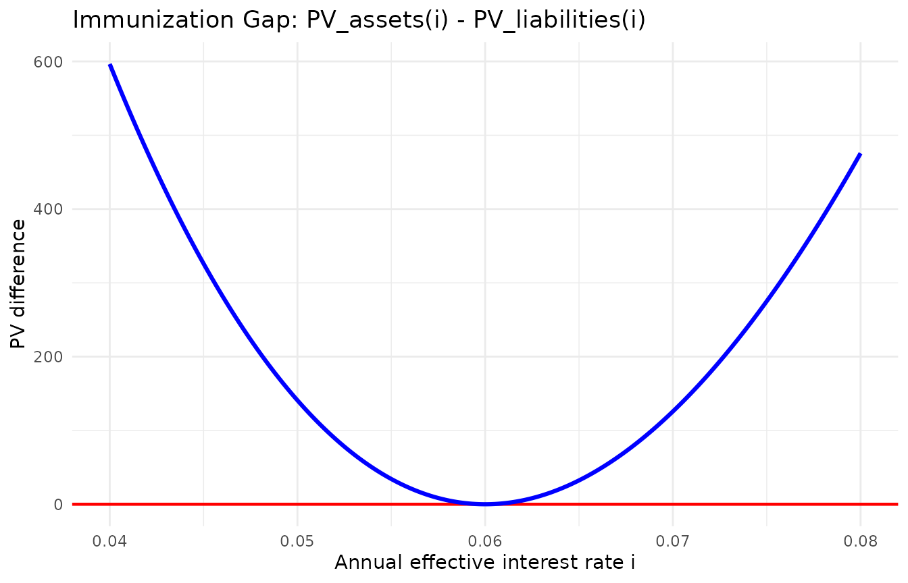

Bonds, Duration, Convexity, and Immunization
Julian Mauricio Fajardo
Source:vignettes/bonds-duration-convexity-immunization.Rmd
bonds-duration-convexity-immunization.RmdIntroduction
A bond converts a contractual sequence of future payments into a value today. For a conventional fixed-coupon bond, the main inputs are the coupon payments, the redemption value, the payment dates, and the yield used to discount the cash flows.
The coupon rate and the yield play different roles. The coupon rate is contractual and determines the periodic payment. The yield is the rate used to value those payments. A change in market yield does not modify the contractual coupon; it modifies the present value of the remaining cash flows and therefore the bond price.
This vignette starts from the usual actuarial equations and then uses
tidyactuarial to reproduce and audit the calculations. The
mathematical structure is established first; the software is used
afterward as a computational tool.
Bond cash flows and the value equation
Consider a conventional bond with face value F, coupon rate r per coupon period, redemption value C, effective yield i per coupon period, and n remaining coupon periods. The periodic coupon is Fr.
Taking the valuation date as time 0, the future cash flows are
Fr,\; Fr,\; \ldots,\; Fr+C.
Therefore,
P = Fr(v+v^2+\cdots+v^n)+Cv^n,
where v=(1+i)^{-1}. Since the coupon payments form an annuity-immediate,
P = Fr\,a_{\overline{n}|i} + Cv^n.
Equivalently,
P = Fr\frac{1-(1+i)^{-n}}{i} + C(1+i)^{-n}.
This is the ordinary equation of value applied to a level stream of coupons plus a single redemption payment. The coupon rate, the yield, and the number of periods must refer to the same time unit.
Valuing a coupon bond
Consider a bond with
F=C=1{,}000{,}000,
a nominal annual coupon rate of 9\% payable semiannually, and six years to maturity. Suppose the investor requires a nominal annual yield of 10\% convertible semiannually.
The coupon rate per half-year is
r=\frac{0.09}{2}=0.045,
so the semiannual coupon is 45{,}000. The effective yield per half-year is i=0.05, and there are 12 remaining coupon periods. Hence,
P = 45{,}000a_{\overline{12}|0.05} + 1{,}000{,}000(1.05)^{-12} = 955{,}683.74.
Only after constructing the equation of value do we move to the computational representation.
face_value <- 1000000
redemption_value <- 1000000
annual_coupon_rate <- 0.09
years_to_maturity <- 6
coupons_per_year <- 2
bond_flows <-
bond_cash_flows(
face = face_value,
c = annual_coupon_rate,
n = years_to_maturity,
k = coupons_per_year,
R = redemption_value
)
bond_flows
#> # A tibble: 13 × 5
#> cashflow_id period t cf type
#> <int> <int> <dbl> <dbl> <chr>
#> 1 1 1 0.5 45000 coupon
#> 2 2 2 1 45000 coupon
#> 3 3 3 1.5 45000 coupon
#> 4 4 4 2 45000 coupon
#> 5 5 5 2.5 45000 coupon
#> 6 6 6 3 45000 coupon
#> 7 7 7 3.5 45000 coupon
#> 8 8 8 4 45000 coupon
#> 9 9 9 4.5 45000 coupon
#> 10 10 10 5 45000 coupon
#> 11 11 11 5.5 45000 coupon
#> 12 12 12 6 45000 coupon
#> 13 13 12 6 1000000 redemptionbond_cash_flows() represents the contractual payments.
It does not determine the bond price. The valuation basis is introduced
separately.
semiannual_yield <- 0.05
bond_value <-
bond_price(
face = face_value,
c = annual_coupon_rate,
n = years_to_maturity,
k = coupons_per_year,
y_effective_per_period = semiannual_yield,
R = redemption_value
)
bond_value
#> [1] 955683.7The package result reproduces the analytical value. The comparison verifies that the computational implementation follows the actuarial equation established independently.
Yield to maturity as an inverse problem
Suppose the market price of the same bond is now
P=935{,}000.
The YTM is the rate i satisfying
935{,}000 = 45{,}000\frac{1-(1+i)^{-12}}{i} + 1{,}000{,}000(1+i)^{-12}.
For this bond,
f(0.05)>0 \qquad\text{and}\qquad f(0.06)<0,
so the root lies in
5\%<i<6\%.
Since the price of a conventional bond with positive future cash flows is strictly decreasing in the yield, the solution is unique in this interval. Numerically,
i\approx5.2435\%
per half-year.
market_price <- 935000
ytm_result <-
bond_ytm(
P = market_price,
face = face_value,
c = annual_coupon_rate,
n = years_to_maturity,
k = coupons_per_year,
R = redemption_value,
interval = c(0.05, 0.06)
)
semiannual_ytm <-
ytm_result |>
dplyr::pull(i_period) |>
dplyr::first()
ytm_result
#> # A tibble: 1 × 5
#> price i_period j_nominal i_effective_annual k
#> <dbl> <dbl> <dbl> <dbl> <int>
#> 1 935000 0.0524 0.105 0.108 2The interval does not come from the software. It is identified from the equation of value before the numerical solver is used.
Book value
Let BV_t denote the book value at coupon date t. Prospectively,
BV_t = Fr\,a_{\overline{n-t}|i} + Cv^{n-t}.
Retrospectively,
BV_t = P(1+i)^t - Fr\,s_{\overline{t}|i}.
These are two representations of the same financial equation.
For the bond purchased at 935{,}000, after three years, or six semiannual coupon periods,
BV_6 \approx 962{,}555.82.
valuation_time <- 3
book_value <-
bond_book_value(
face = face_value,
c = annual_coupon_rate,
n = years_to_maturity,
t = valuation_time,
k = coupons_per_year,
y_effective_per_period = semiannual_ytm,
R = redemption_value
)
book_value
#> [1] 962555.8The recurrence
BV_t=BV_{t-1}(1+i)-Fr
shows how premiums and discounts are recognized through time. Book value should not be confused with market value: the former follows the yield basis adopted for amortization, whereas the latter uses the yield currently required by the market.
Callable bonds
A callable bond gives the issuer the right to redeem the bond before maturity under specified contractual conditions. The investor does not control the final redemption date.
Suppose scenario s redeems the bond after n_s coupon periods for C_s. At target yield i,
P_s(i) = Fr\,a_{\overline{n_s}|i} + C_sv^{n_s}.
To guarantee at least the target yield under every admissible scenario, the purchase price must satisfy P\le P_s(i) for every s. Hence,
P_{\max}(i) = \min_s P_s(i).
The minimum follows from the contractual structure: the investor must be protected against the least favorable redemption scenario the issuer is allowed to impose.
Consider a bond with face value 1{,}000{,}000, a nominal annual coupon rate of 10\% payable semiannually, and final maturity in eight years. It may be redeemed at year 4 for 1{,}040{,}000, at year 6 for 1{,}020{,}000, or at year 8 for 1{,}000{,}000.
At a target semiannual yield of 4\%, the scenario prices are approximately 1{,}096{,}555.06, 1{,}106{,}342.68, and 1{,}116{,}522.96. Therefore,
P_{\max}=1{,}096{,}555.06.
call_dates <- c(4, 6)
call_values <- c(1040000, 1020000)
target_yield <- 0.04
callable_price <-
bond_callable_price(
face = 1000000,
c = 0.10,
n = 8,
k = 2,
call_t = call_dates,
call_R = call_values,
y_effective_per_period = target_yield,
R = 1000000
)
callable_price
#> [1] 1096555The same contractual logic applies when price is known and yields are compared: the yield to worst is the minimum among the relevant yields.
From price to sensitivity
For a conventional bond with positive future cash flows,
P(i) = \sum_{t=1}^{n}CF_t(1+i)^{-t}.
Differentiating,
\frac{dP}{di} = -\sum_{t=1}^{n}tCF_t(1+i)^{-(t+1)}<0,
and
\frac{d^2P}{di^2} = \sum_{t=1}^{n}t(t+1)CF_t(1+i)^{-(t+2)}>0.
The price-yield relationship is therefore decreasing and convex. These two derivatives lead naturally to duration and convexity.
Duration and convexity of a cash-flow stream
For payments C_j at times t_j,
P(i) = \sum_j C_j(1+i)^{-t_j}.
Define present-value weights
w_j(i) = \frac{C_j(1+i)^{-t_j}}{P(i)}.
For positive cash flows, Macaulay duration is
D_{\text{Mac}}(i) = \sum_j t_jw_j(i),
while modified duration is
D_{\text{mod}}(i) = -\frac{1}{P(i)}\frac{dP(i)}{di} = \frac{D_{\text{Mac}}(i)}{1+i}.
Thus,
\frac{\Delta P}{P} \approx -D_{\text{mod}}\Delta i.
Relative convexity is
C(i) = \frac{1}{P(i)}\frac{d^2P(i)}{di^2},
so the second-order approximation is
\frac{\Delta P}{P} \approx -D_{\text{mod}}\Delta i + \frac12 C(\Delta i)^2.
Duration gives a first-order approximation; convexity adds the effect of curvature.
A general cash-flow example
Consider payments of 120, 160, 220, and 300 million at years 1, 2, 4, and 6, valued at an annual effective rate of 7\%. The analytical results are approximately
P_0=619.64, \qquad D_{\text{Mac}}=3.6512, \qquad D_{\text{mod}}=3.4123, \qquad C=18.0646.
cash_flows <- c(120, 160, 220, 300)
payment_times <- c(1, 2, 4, 6)
valuation_rate <- 0.07
macaulay_duration <-
duration_cash_flow(
cf = cash_flows,
t = payment_times,
rate = valuation_rate,
duration = "macaulay",
output = "value"
)
modified_duration <-
duration_cash_flow(
cf = cash_flows,
t = payment_times,
rate = valuation_rate,
duration = "modified",
output = "value"
)
cash_flow_convexity <-
convexity_cash_flow(
cf = cash_flows,
t = payment_times,
rate = valuation_rate,
output = "value"
)
tibble::tibble(
measure = c("Macaulay duration", "Modified duration", "Convexity"),
value = c(macaulay_duration, modified_duration, cash_flow_convexity)
)
#> # A tibble: 3 × 2
#> measure value
#> <chr> <dbl>
#> 1 Macaulay duration 3.65
#> 2 Modified duration 3.41
#> 3 Convexity 18.1The functions reproduce quantities already defined from the value function and its derivatives.
Specialization to bonds
For a bond with face value F, annual coupon rate c, k coupon payments per year, maturity n years, and redemption value R,
C=\frac{Fc}{k}, \qquad N=nk.
Let j be the effective yield per coupon period and y the annual effective yield. Then
1+y=(1+j)^k, \qquad j=(1+y)^{1/k}-1.
If D_p denotes Macaulay duration in coupon periods, duration in years is
D=\frac{D_p}{k}.
The rate variable used in the sensitivity measure must match the rate change being studied. A duration defined with respect to j must be combined with \Delta j; one defined with respect to y must be combined with \Delta y.
Consider
F=R=1000, \qquad c=8\%, \qquad n=10, \qquad k=2, \qquad y=9\%.
bond_duration_result <-
bond_duration(
face = 1000,
c = 0.08,
n = 10,
k = 2,
y = 0.09,
y_type = "effective"
)
bond_convexity_result <-
bond_convexity(
face = 1000,
c = 0.08,
n = 10,
k = 2,
y = 0.09,
y_type = "effective"
)
bond_duration_result
#> # A tibble: 1 × 9
#> price macaulay_duration_periods macaulay_duration_years modified_duration_pe…¹
#> <dbl> <dbl> <dbl> <dbl>
#> 1 947. 14.0 6.98 13.4
#> # ℹ abbreviated name: ¹modified_duration_periods_j
#> # ℹ 5 more variables: modified_duration_years_i <dbl>, yield_per_period <dbl>,
#> # yield_effective_annual <dbl>, k <int>, n_periods <int>
bond_convexity_result
#> # A tibble: 1 × 7
#> price discrete_convexity_periods discrete_convexity_years yield_per_period
#> <dbl> <dbl> <dbl> <dbl>
#> 1 947. 235. 58.7 0.0440
#> # ℹ 3 more variables: yield_effective_annual <dbl>, k <int>, n_periods <int>For this bond, the Macaulay duration is approximately 13.9529 coupon periods, or 6.9764 years.
Portfolio duration and convexity
Portfolio sensitivities are value-weighted averages when the individual measures refer to the same rate movement.
portfolio <-
tibble::tibble(
asset = c("A", "B", "C"),
units = c(450, 300, 180),
price = c(96.20, 102.75, 88.50),
duration = c(2.80, 5.60, 9.40),
convexity = c(11.40, 43.20, 104.60)
) |>
dplyr::mutate(
market_value = units * price
)
portfolio_duration_result <-
portfolio_duration(
portfolio,
col_P = "market_value",
col_D = "duration",
col_portfolio = NULL
)
portfolio_convexity_result <-
portfolio_convexity(
portfolio,
col_P = "market_value",
col_C = "convexity",
col_portfolio = NULL
)
portfolio_duration_result
#> # A tibble: 1 × 3
#> D_P P_total n_positions
#> <dbl> <dbl> <int>
#> 1 4.93 90045 3
portfolio_convexity_result
#> # A tibble: 1 × 3
#> C_P P_total n_positions
#> <dbl> <dbl> <int>
#> 1 38.8 90045 3The weights are based on economic value, not simply on face amount or number of securities.
From sensitivity to immunization
For a positive cash-flow stream and a horizon H, suppose all cash flows are valued and reinvested using the same flat effective rate i. The accumulated value at the horizon is
W_H(i) = (1+i)^HP(i).
Therefore,
\frac{W_H'(i)}{W_H(i)} = \frac{H-D_{\text{Mac}}(i)}{1+i}.
If
H=D_{\text{Mac}}(i_0),
then W_H'(i_0)=0. At a horizon equal to Macaulay duration, the local price effect and the local reinvestment effect offset each other to first order.
The surplus function and Redington
Let
S(i)=PV_A(i)-PV_L(i).
If
PV_A(i_0)=PV_L(i_0),
then S(i_0)=0. If, in addition,
D_A(i_0)=D_L(i_0),
then S'(i_0)=0.
Since PV''(i)=PV(i)C(i), under present-value equality,
S''(i_0) = PV_A(i_0)\left[C_A(i_0)-C_L(i_0)\right].
Thus the classical Redington conditions are
PV_A(i_0)=PV_L(i_0),
D_A(i_0)=D_L(i_0),
and
C_A(i_0)>C_L(i_0).
Redington is therefore a local curvature condition. By contrast, duration-convexity matching imposes C_A=C_L, so S''(i_0)=0. These are different constructions.
An integrated immunization example
Consider liabilities
L=(30{,}000,\ 40{,}000,\ 50{,}000)
payable at years 3, 5, and 8, valued at an annual effective rate of 5\%. Their present value is approximately 91{,}098.14, with Macaulay duration 5.5455 and convexity 36.7184.
Suppose zero-coupon assets with redemption value 1,000 are available at maturities 2, 5, and 10 years.
liabilities <- c(30000, 40000, 50000)
liability_times <- c(3, 5, 8)
reference_rate <- 0.05
asset_maturities <- c(2, 5, 10)
asset_redemption <- 1000
asset_prices <-
asset_redemption *
(1 + reference_rate)^(-asset_maturities)
asset_durations <-
asset_maturities
asset_convexities <-
asset_maturities *
(asset_maturities + 1) /
(1 + reference_rate)^2Using the 2-year and 10-year assets:
duration_match <-
immunize_duration(
L = liabilities,
t = liability_times,
P = asset_prices[c(1, 3)],
D = asset_durations[c(1, 3)],
i = reference_rate,
i_type = "effective"
)
duration_match
#> # A tibble: 2 × 6
#> w PV_L D_L PV_A D_A n_assets
#> <dbl> <dbl> <dbl> <dbl> <dbl> <int>
#> 1 55.9 91098. 5.55 91098. 5.55 2
#> 2 65.8 91098. 5.55 91098. 5.55 2immunize_duration() matches present value and duration.
It does not by itself prove Redington; the convexity inequality must be
checked separately.
With all three assets, present value, duration, and convexity can be matched simultaneously:
duration_convexity_match <-
immunize_duration_convexity(
L = liabilities,
t = liability_times,
P = asset_prices,
D = asset_durations,
C = asset_convexities,
i = reference_rate,
i_type = "effective"
)
duration_convexity_match
#> # A tibble: 3 × 8
#> w PV_L D_L C_L PV_A D_A C_A n_assets
#> <dbl> <dbl> <dbl> <dbl> <dbl> <dbl> <dbl> <int>
#> 1 7.34 91098. 5.55 36.7 91098. 5.55 36.7 3
#> 2 90.0 91098. 5.55 36.7 91098. 5.55 36.7 3
#> 3 22.7 91098. 5.55 36.7 91098. 5.55 36.7 3immunize_duration_convexity() should be interpreted
exactly this way: it matches present value, duration, and convexity. It
is not a direct implementation of Redington and it does not establish
full immunization.
The immunization gap
The surplus function has a direct interpretation:
S(i)>0 \Rightarrow \text{asset surplus},
S(i)=0 \Rightarrow \text{exact value equality},
S(i)<0 \Rightarrow \text{asset insufficiency}.
plot_immunization_gap() can be used to inspect this gap
over a finite range of rates.
asset_cash_flows <- list(
list(
cf = 444998.22,
t = 3
),
list(
cf = 561800.00,
t = 7
)
)
plot_immunization_gap(
L = 1000000,
t = 5,
asset_cashflows = asset_cash_flows,
w = c(1, 1),
i = 0.06,
i_type = "effective",
delta = 0.02
)
Immunization gap around the reference rate.
The graph is a diagnostic tool. A finite grid of rates can illustrate the shape of S(i), but it cannot prove S(i)\ge0 for every admissible rate. Full immunization requires a stronger structural argument.
Final actuarial reading
The valuation of a fixed-income position begins with cash flows and a rate basis. Duration and convexity then describe how that value responds locally to changes in the rate.
The sequence is
P(i) \longrightarrow P'(i) \longrightarrow D \longrightarrow P''(i) \longrightarrow C,
followed by
PV_A-PV_L \longrightarrow \text{duration matching} \longrightarrow \text{immunization}.
Throughout the vignette, tidyactuarial enters after the
actuarial structure has been identified. It reproduces bond values,
yields, sensitivities, portfolio measures, and immunization systems
while the mathematical interpretation remains explicit.
The same precision applies to the immunization functions:
immunize_duration() matches present value and duration;
immunize_duration_convexity() matches present value,
duration, and convexity; Redington additionally requires favorable
curvature; and full immunization requires a stronger structural
argument.
The software verifies the equations being solved. It does not replace the conditions that define the actuarial strategy.